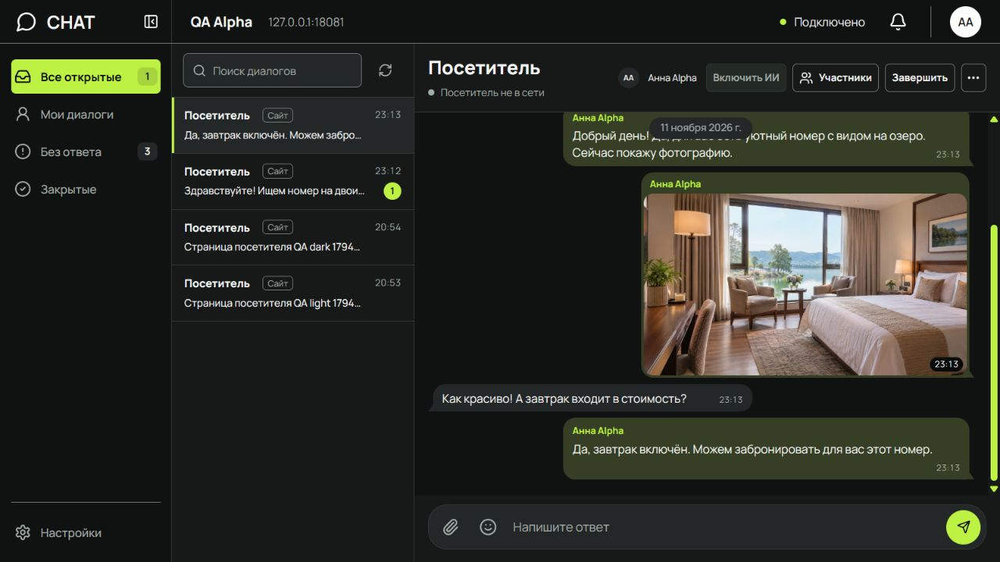

CHAT.
Одно пространство.
Каждый диалог.

Клиент пишет.
Команда подхватывает.
У бизнеса несколько сайтов и каналов связи. У клиента — один вопрос. Чат объединяет обращения в рабочем пространстве конкретного сайта, где команда видит историю и отвечает вместе.
Задача проекта — связать лёгкий встраиваемый виджет, удобный интерфейс операторов и надёжное хранение сообщений. С понятными правами доступа и установкой backend на обычный PHP-хостинг.
- Продукт
- Многосайтовая чат-система
- Объём работы
- Архитектура · UX/UI · разработка
- Основа интерфейса
- Brand UI / UIKIT владельца
Не потерять контекст.
Обращения из разных источников, несколько операторов и возвращающиеся посетители требуют общей истории и понятного состояния диалога.
Сохранить разговор целиком.
Единая очередь сайта, участие нескольких менеджеров, имена отправителей и восстановление истории после потери связи.
Ближе к клиенту.
Где бы он ни написал.
Вся команда.В ПРЕДЕЛАХ СВОЕГО САЙТА
Источник обращения остаётся видимым в списке. Оператор читает историю и отвечает из той же переписки.
Внешние каналы подключаются отдельно. Доступные вложения и состояния доставки зависят от API канала.
Всё, что нужно
для следующего ответа.
Понятная очередь
Фильтры, поиск и непрочитанные помогают ориентироваться в обращениях.
Фокус на переписке
История, вложения и имена операторов собраны в одной переписке.
Контекст по запросу
Контакты и участники помогают разобраться в контексте обращения.
Снимки работающего приложения в QA-среде от 11 ноября 2026 года. Все данные синтетические; фотография номера создана с помощью ИИ.
Связь может пропасть.
История — остаться.
PHP и MySQL хранят сообщения и управляют доступом. Node.js передаёт события в реальном времени. После переподключения клиенты восстанавливают историю из backend.
Повтор без дублей
Ключи идемпотентности защищают отправку при повторных запросах.
Защищённые вложения
Файлы выдаёт PHP после проверки прав. В базе хранятся метаданные.
Гибкое размещение
Панель и API — на PHP/MySQL-хостинге. Realtime — отдельный Node.js-сервис.
У каждого —
своя зона доступа.
- super_admin
- Создаёт сайты и назначает администраторов. По умолчанию не читает переписки клиентов.
- site_admin
- Управляет своим сайтом и его командой. Видит переписки этого сайта.
- manager
- Читает и ведёт диалоги только своего сайта. В одной переписке могут участвовать несколько менеджеров.
Тихий интерфейс.
Заметное действие.
Привет. Давайте начнём разговор.
АБВГДЕЖЗИЙКЛМНОПРСТУФХЦЧШЩЭЮЯABCDEFGHIJKLMNOPQRSTUVWXYZ
Лайм выделяет действие и выбранный раздел. Нейтральные поверхности оставляют внимание тексту. Светлая и тёмная темы используют общие токены.
В интерфейсе — Manrope, радиусы 4 / 6 / 8 px и сенсорные цели от 44 px. Для пузырьков сообщений — 16 px. Крупный Oswald используется только в оформлении кейса.
За подачей —
работающая система.
Снимки локальной QA-среды от 11 ноября 2026 года. Переписка синтетическая, фотография номера создана с помощью ИИ.
Нажмите на снимок, чтобы рассмотреть его в полном размере.
Разговор продолжается.
Система держит контекст.
Создана связная система: встраиваемый виджет, рабочее место команды, подключаемые каналы и backend с разделением доступа по сайтам.
- Общая история и несколько менеджеров в диалоге
- Переподключение, повторы и восстановление сообщений
- Светлая и тёмная темы на UIKIT владельца
- Отдельные права платформы, сайта и оператора
Кейс описывает реализованные сценарии и архитектуру проекта. Бизнес-метрики и рост конверсии не заявляются: измерения для этого кейса не проводились.
за внимание.↑